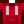

Magma Geode
| Magma Geode | |
| A blacksmith can break this open for you. | |
| Information | |
| Source | Mining • Fishing |
| Sell Price | |
The Magma Geode is a Mineral deposit that contains minerals, artifacts, ores, or basic resources. It can be found on levels 81 to 119 of the Mines or in Fishing Treasure Chests. It can also be received as a gift at the Feast of the Winter Star. It may be additionally be found by breaking boxes and barrels in the Skull Cavern. Five Magma Geodes may be produced by Lava Eel in a Fish Pond containing at least 9 fish, and 10 Magma Geodes may be produced in a pond containing 10 fish. Magma Geodes can also be obtained by pickaxing Magma Geode Nodes. These are found in the small quarry on the Hill-top Farm and Four Corners Farm. Magma Geodes may also drop from a train.
The Magma Geode can be broken open by Clint in the Blacksmith shop for  25g or by using a Geode Crusher.
25g or by using a Geode Crusher.
Neither daily luck nor luck buffs affect the contents of a Magma Geode.
Magma Geode Contents
Artifacts
| Image | Name | Description | Sell Price | Probability |
|---|---|---|---|---|
| Dwarf Gadget | It's a piece of the advanced technology once known to the dwarves. It's still glowing and humming, but you're unable to understand how it works. | 1/26 |
Foraged Minerals
| Image | Name | Description | Sell Price | Probability |
|---|---|---|---|---|
| Fire Quartz | A glowing red crystal commonly found near hot lava. | 1/16 |
Geode Minerals
| Image | Name | Description | Sell Price | Probability |
|---|---|---|---|---|
| Baryte | The best specimens resemble a desert rose. | 1/26 | ||
| Basalt | Forms near searing hot magma. | 1/26 | ||
| Bixite | A dark metallic Mineral sought after for its cubic structure. | 1/26 | ||
| Dolomite | It can occur in coral reefs, often near an underwater volcano. | 1/26 | ||
| Fire Opal | A rare variety of opal, named for its red spots. | 1/26 | ||
| Helvite | It grows in a triangular column. | 1/26 | ||
| Jasper | When polished, this stone becomes attractively luminous. Prized by ancient peoples for thousands of years. | 1/26 | ||
| Lemon Stone | Some claim the powdered crystal is a dwarvish delicacy. | 1/26 | ||
| Neptunite | A jet-black crystal that is unusually reflective. | 1/26 | ||
| Obsidian | A volcanic glass that forms when lava cools rapidly. | 1/26 | ||
| Star Shards | No one knows how these form. Some scientists claim that the microscopic structure displays unnatural regularity. | 1/26 | ||
| Tigerseye | A stripe of shimmering gold gives this gem a warm luster. | 1/26 |
Resources
Coal, copper ore, iron ore, and gold ore will be obtained in the following amounts: 30% for 1, 30% for 3, 30% for 5, 9% for 10, and 1% for 20. Stone has a 50% chance to use those values and a 50% chance to give only 1. Iridium Ore has a 30% chance for 1, 30% for 2, 30% for 3, 9% for 6, and 1% for 11. Only 1 clay can be obtained from a single geode.
| Image | Name | Description | Sell Price | Probability |
|---|---|---|---|---|
| Stone | A common material with many uses in crafting and building. | 1/8 | ||
| Clay | Used in crafting and construction. | 1/16 | ||
| Coal | A combustible rock that is useful for crafting and smelting. | 1/20 | ||
| Copper Ore | A common ore that can be smelted into bars. | 1/20 | ||
| Iron Ore | A fairly common ore that can be smelted into bars. | 1/20 | ||
| Gold Ore | A precious ore that can be smelted into bars. | 1/20 | ||
| Iridium Ore | An exotic ore with many curious properties. Can be smelted into bars. | 1/20 |
Gifting
| Villager Reactions
| |
|---|---|
| Dislike | |
Tailoring
Magma Geode is used in the spool of the Sewing Machine to create the Red Hoodie.  It can also be used in dyeing, serving as a red dye at the dye pots located in Emily and Haley's house, 2 Willow Lane.
Quests
The Magma Geode is not used in any quests.
Trivia
- By multiplying the sell price of each item by the chance to obtain it and how many you would receive on average (with ores, clay, and stone) and adding those products together, you can find the average profit of breaking open a single magma geode. Magma geodes have an average return of
 167.34g. With the Gemologist Profession, magma geodes have an average return of 207.87g. A magma geode will sell in the shipping bin for 150g. It is therefore profitable to process magma geodes through Geode Crusher and sell the contents.
167.34g. With the Gemologist Profession, magma geodes have an average return of 207.87g. A magma geode will sell in the shipping bin for 150g. It is therefore profitable to process magma geodes through Geode Crusher and sell the contents.
| Open method | No Profession | |
|---|---|---|
External Links
Users with access to their saved game files may find the "Stardew Predictor" utility helpful for predicting which items will be produced from breaking open geodes. The utility is located at: https://mouseypounds.github.io/stardew-predictor/
History
- 1.4: Can now be used in Tailoring. Can be produced by Fish Ponds.
| Minerals | |
|---|---|
| Foraged Minerals | Earth Crystal • Fire Quartz • Frozen Tear • Quartz |
| Gems | Amethyst • Aquamarine • Diamond • Emerald • Jade • Prismatic Shard • Ruby • Topaz |
| Geode Minerals | Aerinite • Alamite • Baryte • Basalt • Bixite • Calcite • Celestine • Dolomite • Esperite • Fairy Stone • Fire Opal • Fluorapatite • Geminite • Ghost Crystal • Granite • Helvite • Hematite • Jagoite • Jamborite • Jasper • Kyanite • Lemon Stone • Limestone • Lunarite • Malachite • Marble • Mudstone • Nekoite • Neptunite • Obsidian • Ocean Stone • Opal • Orpiment • Petrified Slime • Pyrite • Sandstone • Slate • Soapstone • Star Shards • Thunder Egg • Tigerseye |
| Geodes | Geode • Frozen Geode • Magma Geode • Omni Geode |